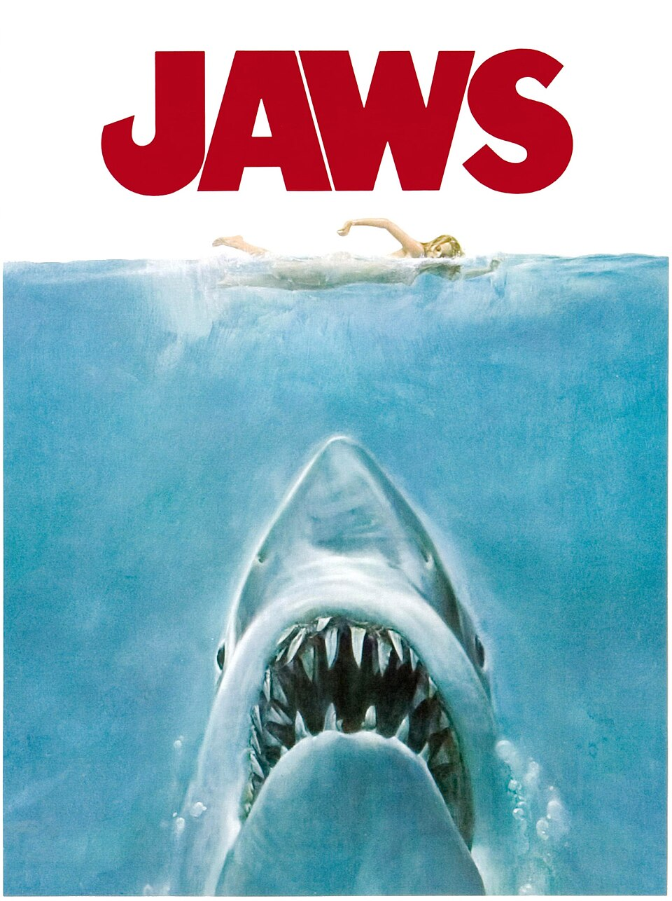

Эра блокбастеров и видео
1975 – 1999

10 самых влиятельных фильмов эры
Единого официального списка нет. Этот список составлен по общим обзорам истории кино (источники — внизу главной страницы). Фильмы идут по году выпуска.
- Челюсти (Jaws)
Стивен Спилберг, 1975 - Звёздные войны. Эпизод IV (Star Wars)
Джордж Лукас, 1977 - Чужой (Alien)
Ридли Скотт, 1979 - Бегущий по лезвию (Blade Runner)
Ридли Скотт, 1982 - Инопланетянин (E.T. the Extra-Terrestrial)
Стивен Спилберг, 1982 - Назад в будущее (Back to the Future)
Роберт Земекис, 1985 - Крепкий орешек (Die Hard)
Джон Мактирнан, 1988 - Криминальное чтиво (Pulp Fiction)
Квентин Тарантино, 1994 - История игрушек (Toy Story)
Джон Лассетер, 1995 - Матрица (The Matrix)
Лана и Лилли Вачовски, 1999